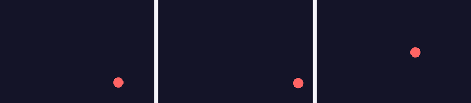

Глава 20 · Разработка игр с Pygame
Мини-проект: прыгающий мяч
Первая настоящая мини-игра на Pygame — движение, отскоки и игровой цикл в одном коротком проекте.
Соберём всё в один мини-проект: мяч, который отскакивает от всех четырёх стен экрана.
prygayushij_myach.py
import pygame
SHIRINA, VYSOTA = 600, 400
RADIUS = 20
pygame.init()
screen = pygame.display.set_mode((SHIRINA, VYSOTA))
clock = pygame.time.Clock()
x, y = SHIRINA // 2, VYSOTA // 2
dx, dy = 4, 3
rabotaet = True
while rabotaet:
for event in pygame.event.get():
if event.type == pygame.QUIT:
rabotaet = False
x += dx
y += dy
if x - RADIUS < 0 or x + RADIUS > SHIRINA:
dx = -dx
if y - RADIUS < 0 or y + RADIUS > VYSOTA:
dy = -dy
screen.fill((20, 20, 40))
pygame.draw.circle(screen, (255, 100, 100), (int(x), int(y)), RADIUS)
pygame.display.flip()
clock.tick(60)
pygame.quit()
dx = -dx — отражение одной строкой
Смена знака скорости на противоположный — стандартный приём отражения от стены: движение продолжается с той же скоростью, только в обратную сторону, без дополнительных проверок направления.
Полный, уже проверенный файл — отдельно:
projects/pygame/bouncing-ball/bouncing_ball_basic.py
★★ Самостоятельная задача
Меняем цвет при отскоке
При каждом отскоке от стены выбирайте новый случайный цвет мяча (random.choice() из главы 5/11).
★★★ Задача повышенной сложности
Два мяча
Добавьте второй мяч с собственными x, y, dx, dy — оба должны двигаться и отскакивать независимо.
Практика: прыгающий мяч
Pygame открывает нативное окно Python — выполните локально в VS Code, PyCharm или Jupyter
Практика выполняется локально
Ограничения этой версии
Мяч уже прыгает, но у этой версии есть слабые места: скорость отскока зависит от частоты кадров конкретного компьютера, а весь код лежит в глобальных переменных без какой-либо структуры. Дальше в этой главе мы разберём, откуда берутся оба ограничения и как до конца главы вырастить этот же проект в профессионально организованную версию — с классом
Game, паузой и движением, которое не зависит от частоты кадров.